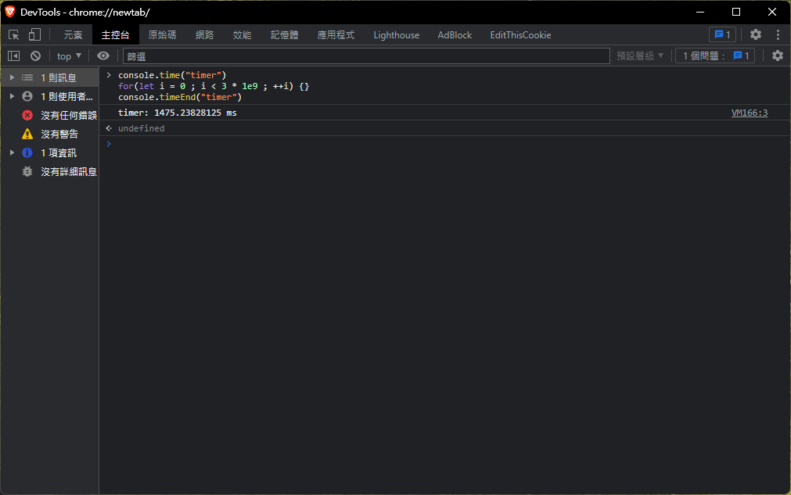
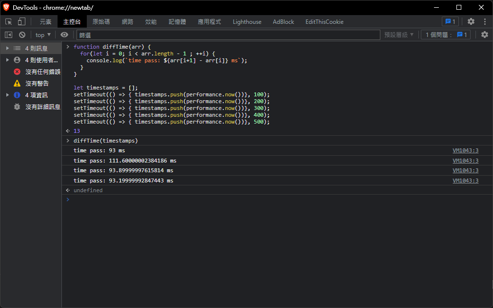
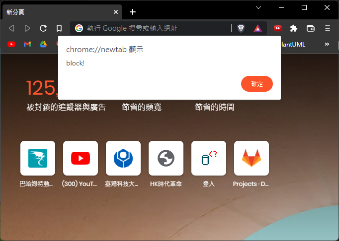
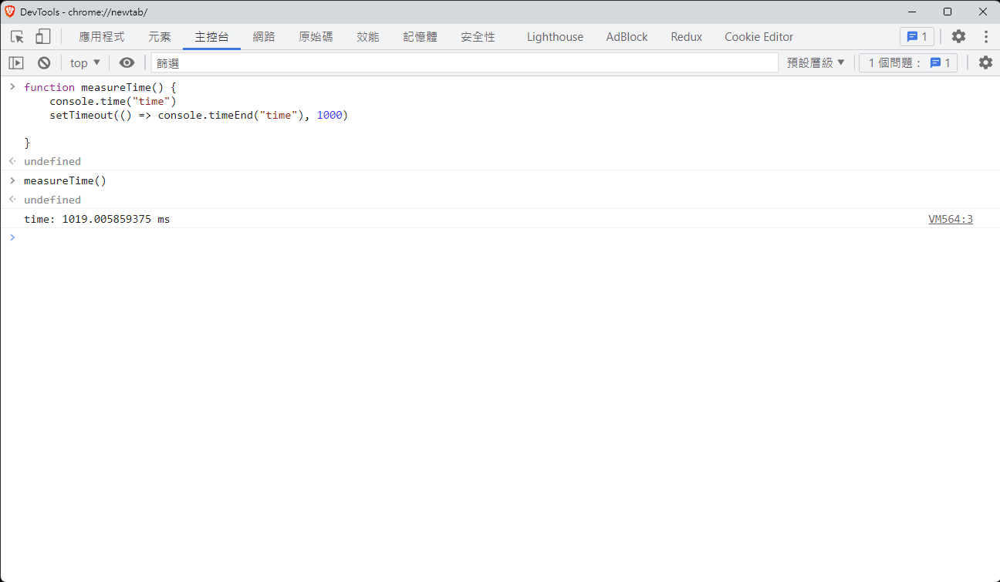

JavaScript 架構
在這個章節，會先說明非同步程式的概念，假設有個程式這樣寫：
const arr = [];
arr.push(1);
arr.push(2);
arr.push(3);
arr.push(4);
console.log(arr) // [1,2,3,4]
在這個例子中，程式碼都是由上到下執行，因此很好預測執行結果 但如果程式碼改成以下模式：
const arr = []
let fileA = download(urlA);
let fileB = download(urlB);
let fileC = download(urlC);
while( !(fileA.done && fileB.done && fileC.done) ) {
if(fileA.done && !fileA.lock) {
arr.push(fileA.content);
fileA.writeLock();
}
if(fileB.done && !fileB.lock) {
arr.push(fileB.content);
fileB.writeLock();
}
if(fileC.done && !fileC.lock) {
arr.push(fileC.content);
fileC.writeLock();
}
}
假設有個想像的程式碼，會下載三個網站的內容，並有個迴圈檢測是否下載完成；如果有任何網站還未下載完成，就不會離開迴圈
迴圈會依序檢查A、B、C的內容，若下載完成後，把資料放入arr中，並且上鎖防止重複寫入
有個關鍵的問題是：arr中資料的順序為何 ？無從得知
或許可以改成： arr[0] = fileA.content這種做法來確定資料的順序，但是這不切實際
比方說需要先登入銀行、然後才能操作帳戶，操作順序有時序性；當步驟越來越繁瑣
無法確定API回傳順序時，這依舊是個難題 - 在網路世界中，資料未必能照你的想法依序取得
JavaScript 引擎架構

在解釋上方的架構圖之前，先模擬一個情境：
在 C++ 中，可能使用 cin 或是 scanf 來得到使用者的輸入，若程式碼如下：
cin >> num;
cout << "Hello, world" << endl;
cin 會嘗試取得使用者輸入，然後輸出 "Hello, world"。但是使用者輸入之前，畫面是不會繼續渲染的，這在交互式的 command interface 不是問題，但是到了 GUI 卻相當嚴重； 比方說登入頁面，在你輸入帳號、密碼之前，畫面上其他部分都停止繪製，這聽起來很可怕對嗎？ 因此瀏覽器採用的做法是"事件驅動"，透過觀察者模式 (設計模式的一種，不贅述)，等待用戶發出的事件，並進行響應
比方說
<button onclick="alert('My name is Alex')">Click Me</button>
當點下按鈕後，會push clickEvent 至事件佇列(Event Queue)，觀察 EventLoop，他是一個無窮迴圈，會不斷檢查事件佇列，若裡頭有資料，生成Task給後面的執行緒
這就是關鍵所在，因為不知道使用者何時輸入/點擊畫面，因此需要用某種機制來控制渲染的執行緒、網路請求執行緒、JS執行緒，讓他們在正確的時間點運作
有了這個概念，再追加補充：JavaScript有分成 main thread 與 job thread(或者說是 worker, task thread)，而所有的非同步事件會先扔至 job thread，靜待瀏覽器調用
比方說 setTimeout(fn, ms)，接受一個function和毫秒的數值，就會在 N 毫秒後調用該方法
setTimeout(() => console.log('test'), 1000) // 1秒後印出 'test'
實際上的原理如下(大致上相同)：
- 一開始，瀏覽器會初始化一個 timer，紀錄經過的毫秒數
- 呼叫
setTimeout時，放置一個事件在job thread - 每次 Eventloop 的週期，把
main thread的工作結束後，檢查job thread - 如果
job thread裡面有事件，檢查註冊的時戳，並比較Now() - timestamp是不是已經逾時了 - 如果上述為真，代表事件應該要執行了，調用它
- 回到步驟3
比方說設定了 setTimeout(fn, 1000), 此時註冊是時間是12:00:00，當12:00:01時，相減得到 1000， 1000 >= 1000，調用 fn
假設有個情境如下：要輸出1 ~ 5，每一秒輸出一個數字，程式設計如下：
setTimeout(() => console.log(1), 1000);
setTimeout(() => console.log(2), 2000);
setTimeout(() => console.log(3), 3000);
setTimeout(() => console.log(4), 4000);
setTimeout(() => console.log(5), 5000);
這時候，"好像"跟預期的一樣，但是要證明幾點：
首先，如何證明main thread結束後，才會執行job thread的工作？
證明如下：已知setTimeout會把事件放入job thread，那可以先設定setTimeout(fn, 0);
let arr = [];
setTimeout(() => arr.push(1), 0); // job thread
setTimeout(() => arr.push(2), 0); // job thread
setTimeout(() => arr.push(3), 0); // job thread
arr.push(4) // main thread
console.log(arr) // [4,1,2,3]
這個程式碼的意義是：因為前面三次push是放在job thread的，因此狀況就好像：
JobThread = [fn, fn, fn];
MainThread = [fn];
必須等到 MainThread 清空後，才會依序執行 job thread 內的工作
其次，每次loop都會去檢查時戳，決定要不要執行job這個描述有點模糊，應該這樣說：
setTimeout 如果設定 ms = 1000，是1000毫秒後執行，還是至少1000毫秒後執行，這個證明有兩個方法：
首先定義基準時間：

在我的電腦上，執行 3 * 109次 空迴圈大約耗時 1500ms，接下來分別推入5個事件到job thread中：
使用 performance.now取得分頁開啟後的累積時間，並透過 setTimeout 放入 job thread

測試方法如下：先定義 diffTime，他會計算陣列前後項的時間差，相當於是 setTimeout 放入時戳的差值
首先定義五個 job，都是放入一個時戳到timestamps[]中，最後手動呼叫 diffTime
可以看到每一次的時間間隔大概是 90~100ms 左右
接下來設計一個實驗：
function diffTime(arr) {
for(let i = 0; i < arr.length - 1 ; ++i) {
console.log(`time pass: ${arr[i+1] - arr[i]} ms`);
}
}
// 放入5個 Task 到 job thread 中
let timestamps = [];
setTimeout(() => { timestamps.push(performance.now())}, 100);
setTimeout(() => { timestamps.push(performance.now())}, 200);
setTimeout(() => { timestamps.push(performance.now())}, 300);
setTimeout(() => { timestamps.push(performance.now())}, 400);
setTimeout(() => { timestamps.push(performance.now())}, 500);
// 使用 for-loop，阻塞 main thread 1500ms 左右
console.time("timer")
for(let i = 0 ; i < 3 * 1e9 ; ++i) {}
console.timeEnd("timer")
// diffTime(timestamps) 最後手動呼叫，查看每個元素被放入的時間差
這個結果的意義是：
- 假定在
t0的時候執行腳本 - 分別設定事件：放入時戳到
timestamps中，分別在t0 + (100 ~ 500)ms的5個時間點 - 然後腳本繼續往下，使用
for-loop阻塞main thread1492ms - 在
t0 + 1492ms的時間點後，清空main thread的所有操作 - 此時檢查
job thread中的 task，發現 5 個 Task 都逾時了 - 依序執行 5 個 Task
也許有點複雜，但是想驗證的核心概念：唯有當 main thread 執行結束後，才會執行job thread 中的Task已被證明
另外還有兩個單純的測試方法：
首先執行，會看到大約每間隔一秒，畫面會輸出一個數字
setTimeout(() => console.log(1), 1000);
setTimeout(() => console.log(2), 2000);
setTimeout(() => console.log(3), 3000);
setTimeout(() => console.log(4), 4000);
setTimeout(() => console.log(5), 5000);
接下來改成執行：
setTimeout(() => console.log(1), 1000);
setTimeout(() => console.log(2), 2000);
setTimeout(() => console.log(3), 3000);
setTimeout(() => console.log(4), 4000);
setTimeout(() => console.log(5), 5000);
window.alert('block!');
alert 會跳出一個提示框，他會強制阻塞main thread，等到5秒後把提示框給點掉

然後再看看 console.log 的輸出，會發現1~5會同時輸出；
還有一個非常簡單暴力的作法：
while(true) {}
setTimeout(() => console.log(), 0); // 永不執行，因為 main thread 被 while-loop 永遠阻塞
關於 setTimeout 或 setInterval
前述的例子中，有點像是證明 main thread 與 job thread 的關係，如果只是證明：setTimeout和setInterval 是至少 N 毫秒後執行
可以透過 console.time 和 console.timeEnd 兩組函數，觀測瀏覽器回傳的時間差異

如圖所示，計時開始與結束的時間是 1019ms，實際上與 1000ms 還是有一點誤差
章節回顧
本節提到幾個點：事件驅動與非同步程式設計，並以下載資料為例子，指出了在網路程式設計中，有無法預測的部分
比方說檔案下載完成的順序、硬碟讀取完成的時間點等
為了鋪陳下個章節非同步程式設計，該章節花了滿大的篇幅說明JS的內部架構
- 對於
非同步有基礎的認識 - 能夠理解事件驅動的概念
- 能夠理解 JS 中的
main thread與job thread